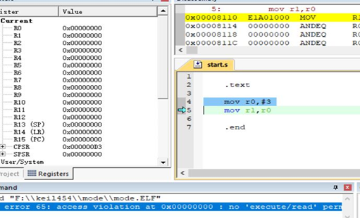

简介
level 9 ARM-ASM-A9
Keil找不到交叉编译工具链Error：failed to execute ‘arm-none-linux-gnueabias’
keil执行没有读写权限
超级终端或者putty无打印
汇编 mov指令mov R1，1234报错
点灯实验汇编版
点灯实验C语言版
串口实验
level 10 系统移植
TFTP环境搭建
NFS环境搭建
Published with GitBook
keil执行没有读写权限
keil执行显示没有读写权限
问题现象如下图所示：

问题原因：没有链接map.lds文件
results matching "
"
No results matching "
"